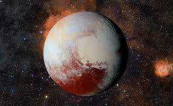

Pluton, désormais classée comme planète naine, est un petit corps glacé situé dans la ceinture de Kuiper.
Son atmosphère mince de méthane et d'azote se gèle lorsqu'elle s'éloigne du Soleil.
Charon, sa grande lune, forme avec elle un système binaire unique.
* Type : Planète naine
* Distance moyenne au Soleil : ~5,91 milliards de km
* Masse : 1,31×1022 kg
* Rayon : ~1 188 km
* Période orbitale : ~248 ans terrestres